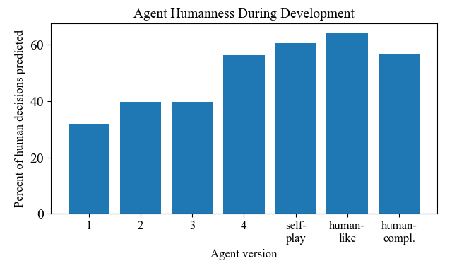
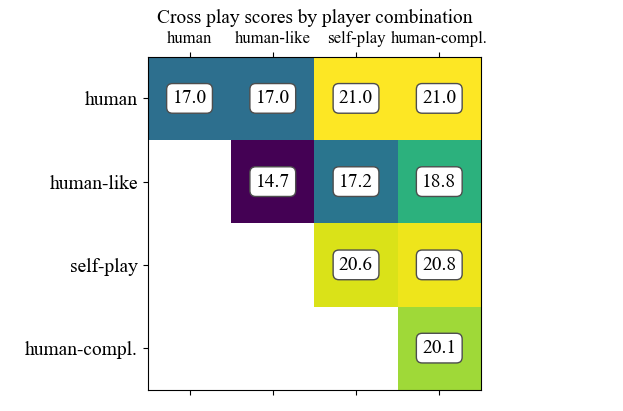

In 2019, DeepMind marked Hanabi as a new frontier for AI research. Hanabi is a collaborative card game where players can see other players' cards, but not their own. In order to make valid plays, players much exchange clues with one another about which cards they hold, but these clues are regulated, costly, and contain partial information. Consequently, Hanabi is a game of nuance; successful Hanabi players can take subtle hints from how other players behave, and effectively picking up on these hints is often the key to success.
Several Hanabi agents exist that excel at the game, but only when pair with an identical copy of themselves (called "self-play"). This is a huge advantage, since any agent playing with a copy of itself is guaranteed to know any conventions, nuances, or implications behind the actions of their twin. But how do these agents play with different teammates, teammates they may have never met before? This was the central question of APL's Learning to Read Minds research effort (paper in development), an effort which uncovered that these self-play bots perform very poorly when paired with non-identical teammates (as well as when paired with a human teammate). Importantly, this reveals that AIs that excel a a task like Hanabi might be ill-suited to collaborate with humans, and this raises the need for alternative training methods in order to develop AIs that can collaborate effectively with human teammates.
In the summer of 2021, the Johns Hopkins Applied Physics Laboratory (APL) held a challenge that tasked staff to develop AI agents that would play well with human teammates in Hanabi. These agents would have to compete with each other as well as bots developed by DeepMind, Facebook, and academia. In all, 8 agents competed for the highest scores when playing with a human teammate. My agent, "Cyclone," emerged as the winner of the challenge by a comfortable margin (mean score 4 points higher than 2nd place).
The key to Cyclone's success was a training process that allowed Cyclone to discover a play style that was complementary to the human play style. To accomplish this, I set the initial goal of developing Cyclone to play as much like a human as possible. This involved coding Cyclone to attend to factors in the game that humans are known to attend to (e.g. the number of info tokens). Then, Cyclone searched for the weights for these factors that maximized the accuracy with which Cyclone could predict the move a human would make in a game state (ultimately with an accuracy of about 70%).
At this point, Cyclone could emulate human decision making with fairly high (70%) accuracy. This created an opportunity to simulate a human teammate with which Cyclone could play many (more than 500,000) games during which the non-simulated-human version of Cyclone explored different weights on the latent factors that led to higher scores for the Cyclone pair. In this way, Cyclone was able to discover a play style that was likely to complement the human play style.
My agent achieved an average score with a human teammate (16.5) that outperformed the top human teammate Hanabi agents in literature (average score of 15.8) [1][2]. Not only did the agent achieve high scores when paired with a human teammate, but this arrangement (Cyclone + a human) achieved higher scores than the best self-play Cyclone agent. This reveals that asymmetric strategies across team members can not only lead to better ad hoc teaming results, but that asymmetric strategies may themselves outperform symmetric strategies. This opens an exciting door to new optimization methods that go beyond the traditional self-play paradigm of recent reinforcement learning agent accomplishments.
[1] Hengyuan Hu, Adam Lerer, Alex Peysakhovich, and Jackob Foerster, "'Other-play' for zero-shot coordination", 2021
[2] Ho Chit Siu, Jaime D. Pena, Edenna Chen, Yutai Zhou, Victor J. Lopez, Kyle Palko, Kimerlee C. Chang, and Ross E. Allen, "Evaulation of human-AI teams for learned and rule-based agents in Hanabi", 2021